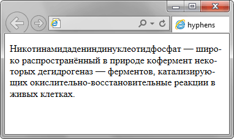

hyphens
Свойство hyphens сообщает браузеру, как расставлять переносы слов в блоке текста. Словарь переносов хранится в браузере и подключается только при наличии атрибута lang с кодом языка. Так, для русского языка следует добавить lang="ru" к элементу <html> или непосредственно к абзацу текста.
Синтаксис
hyphens: none | manual | autoЗначения
- none
- Слова не переносятся, даже при наличии в тексте мягких переносов ­.
- manual
- Переносы слов в тексте происходят в тех местах, где добавлен ­ или <wbr>, если их нет, то переносы не делаются.
- auto
- Браузер автоматически добавляет переносы слов на основе встроенного словаря переносов.
Пример
<!DOCTYPE html>
<html lang="ru">
<head>
<meta charset="utf-8">
<title>hyphens</title>
<style>
p {
-webkit-hyphens: auto;
-moz-hyphens: auto;
-ms-hyphens: auto;
}
</style>
</head>
<body>
<p>Никотинамидадениндинуклеотидфосфат — широко
распространённый в природе кофермент некоторых
дегидрогеназ — ферментов, катализирующих
окислительно-восстановительные реакции в
живых клетках. </p>
</body>
</html>Результат примера в браузере Internet Explorer показан на рис. 1.

Рис. 1. Переносы слов
Объектная модель
Объект.style.hyphens
Примечание
Internet Explorer поддерживает свойство -ms-hyphens.
Chrome, Safari и Android поддерживают свойство -webkit-hyphens.
Firefox поддерживает свойство -moz-hyphens.
Chrome не поддерживает значение auto, поэтому переносы слов в реальности в нём не работают.
Спецификация
| Спецификация | Статус |
|---|---|
| CSS Text Level 3 | Рабочий проект |
Браузеры
| Internet Explorer | Chrome | Opera | Safari | Firefox |
| 10 | 13 | 5.1 | 6 |
| Android | Firefox Mobile | Opera Mobile | Safari Mobile |
| 4 | 6 | 4.2 |